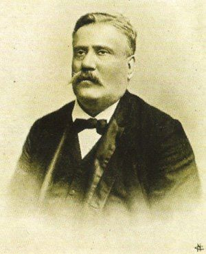
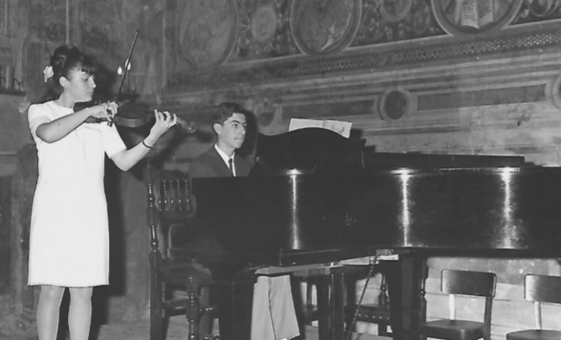
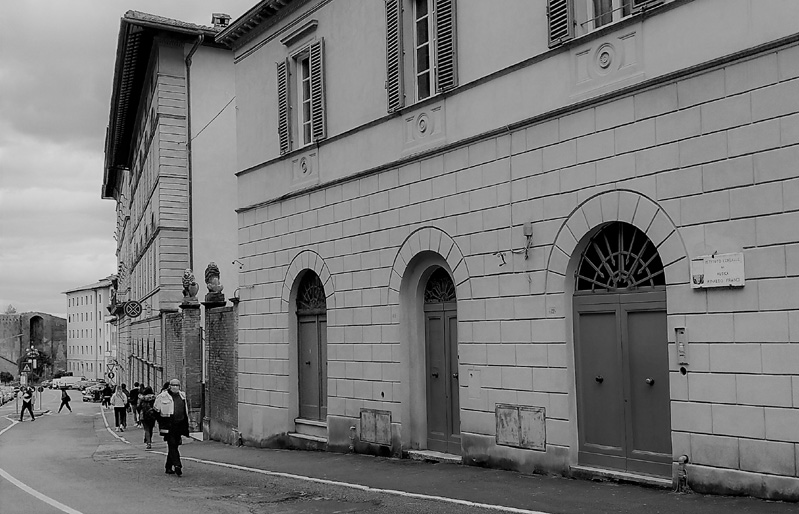

Fu una delibera del Comune di Siena a dare ufficialmente vita, il 27 Gennaio 1834, alla “Scuola di Musica e di Solfeggio della Banda Municipale”.
Tale provvedimento scaturì da una proposta comprensibilmente ineccepibile formulata da Rinaldo Ticci, per mezzo secolo Direttore della Banda e della Scuola stessa.
Consistendo però la Banda Municipale, da cui la Scuola avrebbe tratto origine, in una formazione musicale composta di soli strumenti a fiato ed a percussione, ben presto si sentì la necessità (e nel 1840 si giunse alla decisione) di aggiungere alle sue potenzialità anche l’insegnamento del violino e dei suoi congeneri: viola, violoncello e contrabbasso.
Già nel 1851 iniziò la consuetudine, rimasta poi nel tempo, di organizzare, in occasione del Carnevale e nel corso del mese di Agosto, gli “esperimenti annuali” degli allievi, oggi denominati “saggi”, con lo scopo di dar loro l’emozionante possibilità di esibirsi in presenza di un pubblico formato da persone magari anche esperte di musica, ma nell’occasione di sicuro ben disposte verso qualche… incertezza esecutiva.
Dal 1879 al 1895 a dirigere la Scuola e la Banda fu Pietro Formichi che, anche nell’impegnativo compito di Maestro di Cappella della Cattedrale di Siena, fu fecondo compositore, ben oltre la Marcia del Palio, di musica liturgica vocale e strumentale e di numerose opere per pianoforte.
L’anno 1895 vede alla conduzione del sodalizio musicale il violinista Rinaldo Franci (1852-1907) già celebre concertista anche oltre i confini italiani, cui in seguito la Scuola verrà dedicata.

Rinaldo Franci
Quando, nei primi anni del ‘900, la diffusione dell’arte musicale iniziò ad avvalersi di una significativa e proficua alleanza con i nascenti sistemi di registrazione sonora (dai cilindri di cera ai dischi di bachelite) la partecipazione popolare alla Scuola di Musica conobbe un notevole quanto prevedibile incremento fino a che, superata la Prima Guerra, si intravide l’opportunità di una collaborazione con la nascente Accademia Musicale Chigiana.
Infatti in conseguenza di una riforma del 1923, oltre alla ormai improcrastinabile istituzione di un corso di pianoforte ed all’assegnazione dell’incarico di Direttore della Scuola al violinista Cavalier Vittorio Baglioni, per iniziativa di alcuni docenti della scuola Franci nacque il Quartetto Senese, da subito benvoluto e patrocinato dal Conte Guido Chigi Saracini, investito intanto alla Sovrintendenza dell’Istituto Musicale.
Dopo il riconoscimento ufficiale del 1 Giugno 1940 da parte del Ministero dell’Educazione Nazionale e terminata la Seconda Guerra Mondiale, per iniziativa del già ricordato Maestro Baglioni (divenuto intanto anche Vicepresidente dell’Accademia Musicale) crebbe in seno all’Istituto una formazione di strumenti ad arco, intitolata a Rinaldo Franci prima di divenire “Complesso da Camera di Siena” e successivamente “Orchestra da Camera di Siena” che ebbe alla direzione, successori dello stesso Baglioni, Pier Narciso Masi, Riccardo Brengola, Marco Fornaciari e Fabio Pacciani.

Saggi di studio negli anni '60
A partire dal 31 Dicembre 1985 l’Istituto, al tempo guidato dal violoncellista Giuseppe Papi, poté vantare per decreto del Presidente della Repubblica il Pareggiamento ai Conservatori Italiani, con la possibilità di accogliere ai relativi Esami di Stato sia i propri allievi, sia quelli “esterni”.
Dunque nella necessità di locali maggiormente spaziosi, lasciata l’ormai “storica” sede di Via Garibaldi 42, l’Istituto Superiore di Studi Musicali Rinaldo Franci si trova ora operante nei prestigiosi ambienti dell’ex Convitto Tolomei al Prato di Sant’Agostino.

La sede storica di via Garibaldi

 ACCADDE OGGI
ACCADDE OGGI